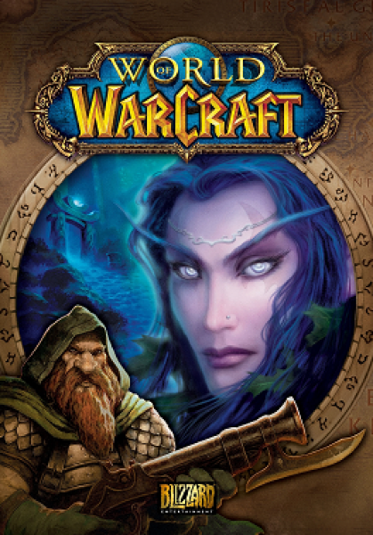

RPG · 2004
World of Warcraft
Made an entire genre mainstream and kept millions inside it.

Cover: Wikipedia: World of Warcraft
Facts
- Released
- 2004-11-23
- Genre
- MMORPG
- Category
- RPG
- Platforms
- PC
- Developers
- Blizzard Entertainment
- Publishers
- Blizzard Entertainment